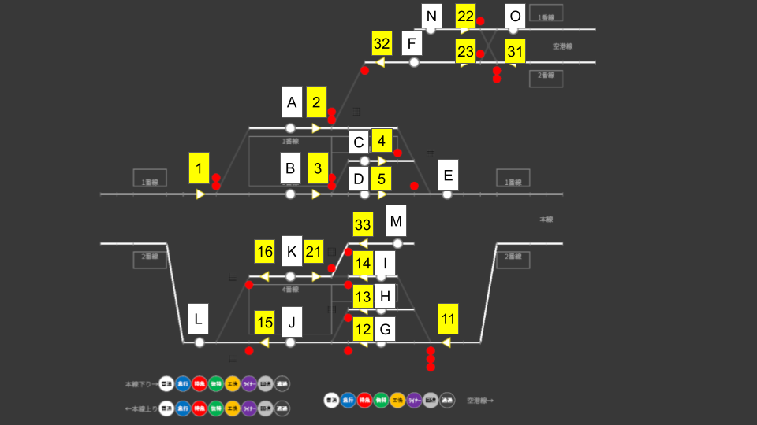

🎯 地圖概要
京濱大田是本線與空港線在此分岔、設有6 個月台（1〜6 股道）的樞紐車站。 在本線上下行駛的列車、從本線直通空港線的列車、從空港線駛入本線的列車，以及在本站折返的列車交錯運行， 是最考驗進路編排能力的地圖。
- 股道：1 股道（空港線）／ 2・3 股道（本線下行）／ 4 股道（空港線）／ 5・6 股道（本線上行）
- 方向：本線下行 ・ 本線上行 ・ 空港線
- 折返：有（本線⇔空港線的折返運用）
- 增結・併結：無（本地圖不會發生車輛連結作業）
🗺 控制桿配置圖

請透過上圖確認站內控制桿（起點・終點）與股道的位置關係。進路以起點控制桿與終點控制桿的組合開通（例：進路 1B 以起點控制桿「1」與終點控制桿「B」開通）。
🔀 依方向區分的進路使用方法
在京濱大田，列車「從哪裡來」「進入哪條股道」「往哪個方向出發」決定了要使用的進路。 下方一覽即本地圖的基本 8 種模式。請將到達與出發的進路成組記住。
本線下行 本線下行（左 → 右）
| 模式 | 使用股道 | 到達進路 | 出發進路 | 備註 |
|---|---|---|---|---|
| 本線下行（通過・停靠） | 3 股道 | 1B | 3D ＋ 5E | 讓本線下行列車直行通過的基本進路。特急等優等列車也使用此股道。 |
| 本線下行（2 股道待避） | 2 股道 | 1B ＋ 3C | 4E | 供被後續優等列車超越的普通列車待避的股道。以 1B 朝 3 股道側進入，同時以 3C 轉往 2 股道。 |
| 本線下行 → 空港線 直通 | 1 股道 | 1A | 2F ＋ 23O | 從本線下行進入、直接駛往空港線的直通列車。 |
本線上行 本線上行（右 → 左）
| 模式 | 使用股道 | 到達進路 | 出發進路 | 備註 |
|---|---|---|---|---|
| 本線上行（通過・停靠） | 6 股道 | 11G ＋ 12J | 15L | 讓本線上行列車直行通過的基本進路。特急等優等列車也使用此股道。 |
| 本線上行（5 股道待避） | 5 股道 | 11H | 13J ＋ 15L | 供被後續優等列車超越的普通列車待避的股道。 |
| 空港線 → 本線上行 直通 | 4 股道 | 31N ＋ 33K | 16L | 從空港線進入、直接駛往本線上行的直通列車。 |
折返 在本站轉換方向的列車
| 模式 | 使用股道 | 到達進路 | 出發進路 | 備註 |
|---|---|---|---|---|
| 本線上行 → 折返 → 空港線 | 4 股道 | 11I ＋ 14K | 21M ＋ 22O | 以本線上行到達 → 折返後往空港線發車。 |
| 空港線 → 折返 → 本線下行 | 1 股道 | 31F ＋ 32A | 2E | 從空港線到達 → 折返後往本線下行發車。 |
・1 股道＝空港線（本線下行⇔空港線的直通・來自空港線的折返往下行）
・2 股道＝本線下行的待避
・3 股道＝本線下行的主用股道（通過・停靠）
・4 股道＝空港線（本線上行⇔空港線的直通・來自本線上行的折返往空港線）
・5 股道＝本線上行的待避
・6 股道＝本線上行的主用股道（通過・停靠）
🔔 3 組發車按鈕群
京濱大田的發車按鈕依目的地方向分為3 塊面板。 請依「要發車的列車前往哪個方向」選擇面板。
| 發車按鈕群 | 對象股道 → 方向 | 駛出股道側的進路 |
|---|---|---|
| 下り方面 | 1・2・3 股道 → 下行本線 | 2E（1 股道）／4E（2 股道）／3D（3 股道） |
| 上り方面 | 4・5・6 股道 → 上行本線 | 16L（4 股道）／13J（5 股道）／15L（6 股道） |
| 空港方面 | 1・4 股道 → 空港線 | 2F（1 股道）／21M（4 股道） |
⏱ 待避運用（早尖峰）
早尖峰時段，普通列車會被後續的優等列車超越，因此不進入主用股道（3 股道・6 股道），而是進入待避用股道。
| 方向 | 待避股道 | 開始使用的大致時間 |
|---|---|---|
| 上行普通 | 5 股道 | 大約 7:20 以後 |
| 下行普通 | 2 股道 | 大約 7:37 以後 |
🔄 折返運用的流程
京濱大田的折返，是在到達的月台上直接轉換方向，接著以另一班次發車的運用。 不使用引上線，直接在股道上折返。折返有以下 2 種。
- 1 股道：從空港線到達 → 折返後往本線下行發車
- 4 股道：從本線上行到達 → 折返後往空港線發車
京濱大田的折返不是回送（回○○）。由同一列車擔任「到達班次 → 其折返班次」， 折返班次以運用編號結尾加上「_2」的形式管理（例：以 641T 到達 → 以 641T_2 發車）。 請一邊在發車看板上確認到達班次與折返班次的對應，一邊進行操作。
🔢 操作步驟
-
開通到達進路
將要折返的列車迎入折返用股道。 1 股道需同時開通來自空港線的到達進路 31F ＋ 32A，4 股道需同時開通來自本線上行的到達進路 11I ＋ 14K。
-
等待到達與折返
列車停靠於股道並轉換方向後，會切換為後續的折返班次（結尾加上「_2」的運用）。請在發車看板上確認發車時刻與發車方向。
-
開通出發進路
朝折返後的方向開通出發進路。 1 股道 → 本線下行使用 2E，4 股道 → 空港線使用 21M ＋ 22O。
-
按下發車按鈕
在折返後方向的面板上按下發車按鈕（往下行發車用「下り方面」，往空港線發車用「空港方面」）。到了出發時刻列車就會發車。
⚠ 常見錯誤與注意事項
① 選錯方向（發車按鈕群）
1 股道・4 股道可往多個方向出發。發車前請確認已選擇折返後前往方向的面板。
② 忘記分配到待避股道
若將早尖峰（上行約 7:20 以後・下行約 7:37 以後）的普通列車放入主用股道（3 股道・6 股道），後續的優等列車就會堵住。普通列車請進入待避股道（2 股道・5 股道）。
③ 混淆折返列車
折返時，到達班次與其折返班次（結尾加上「_2」的運用。例：641T → 641T_2）為同一列車，不會變成回送。請在發車看板上確認到達班次與折返班次的對應，避免與其他列車混淆。